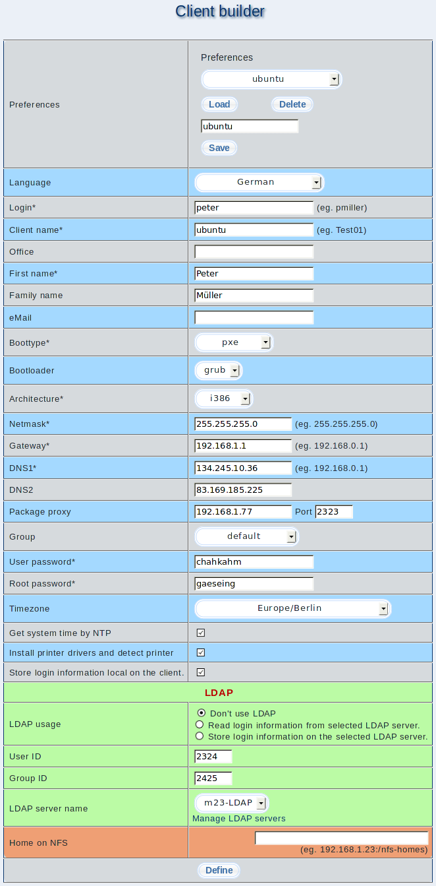

The entered values are used for all mass clients that are derived from this master client.

Some settings can vary from client to client. These settings can be read from a file, entered by hand, generated automatically or kept for all clients. A precise decision is made about the generation method during the "mass install".
root
2013-05-11